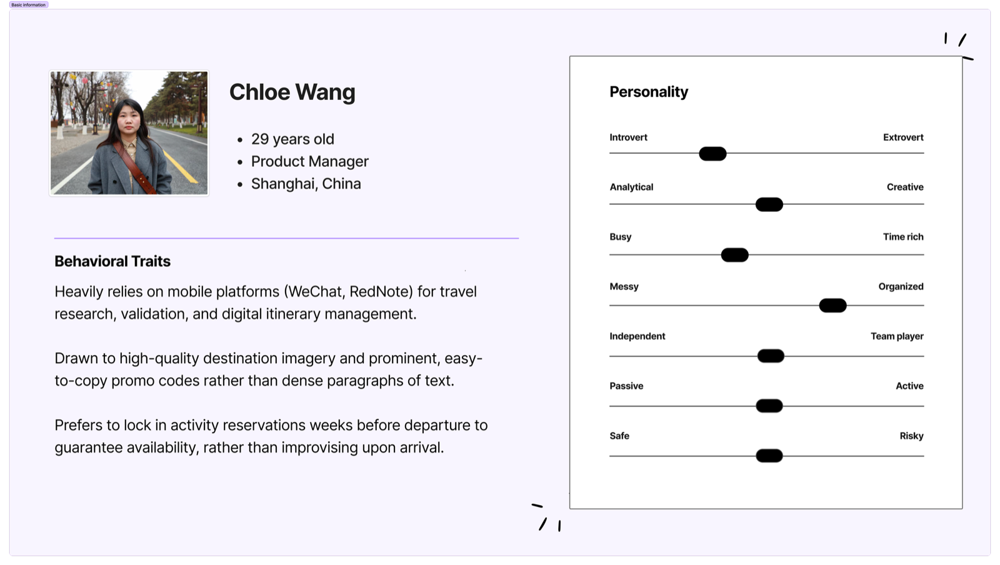
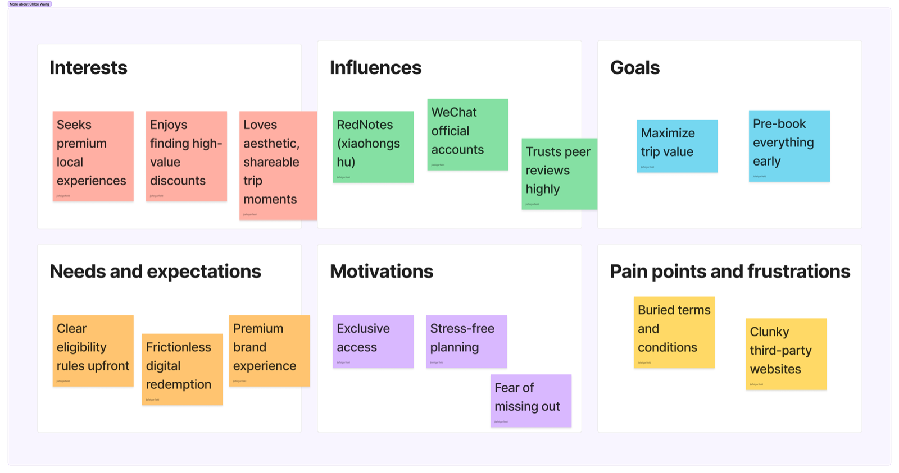
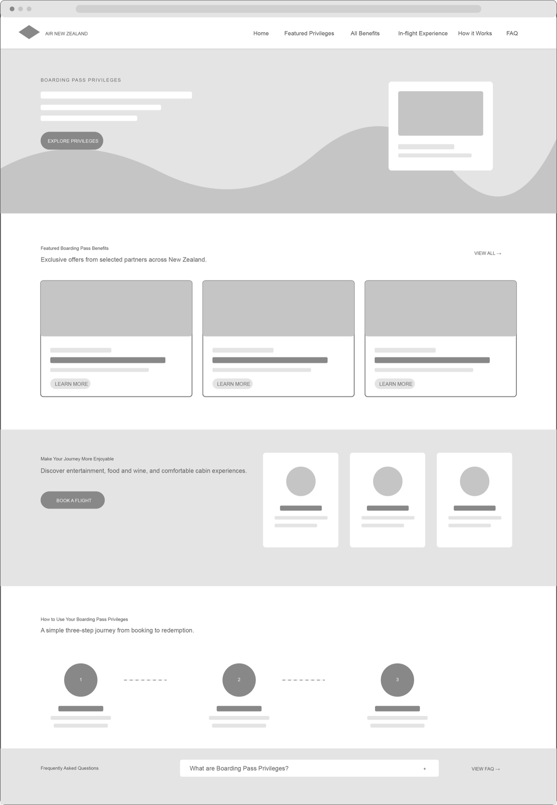
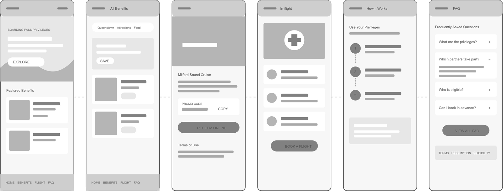
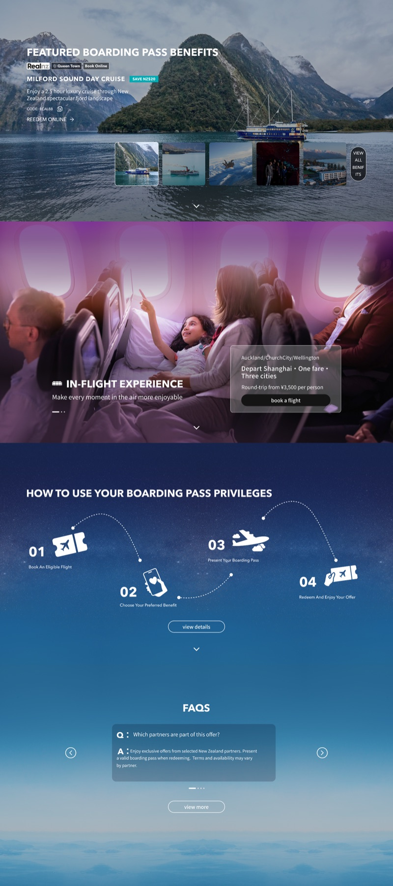
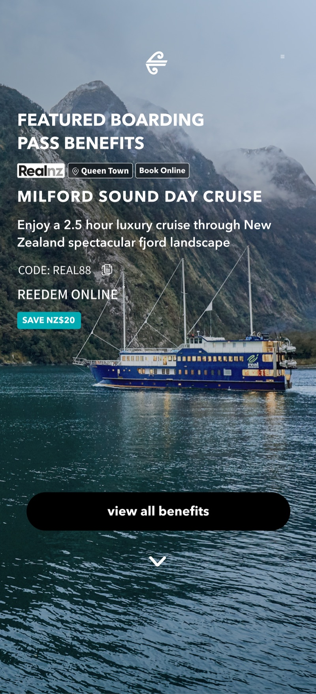
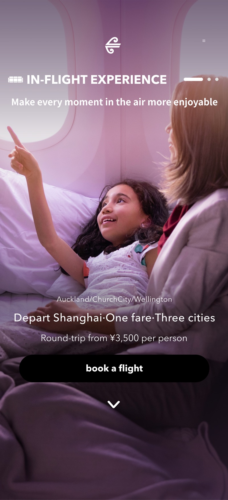
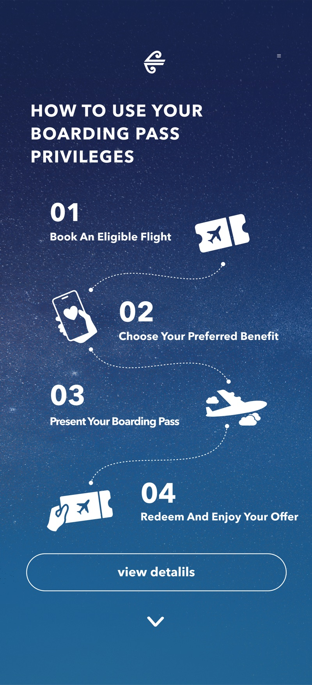
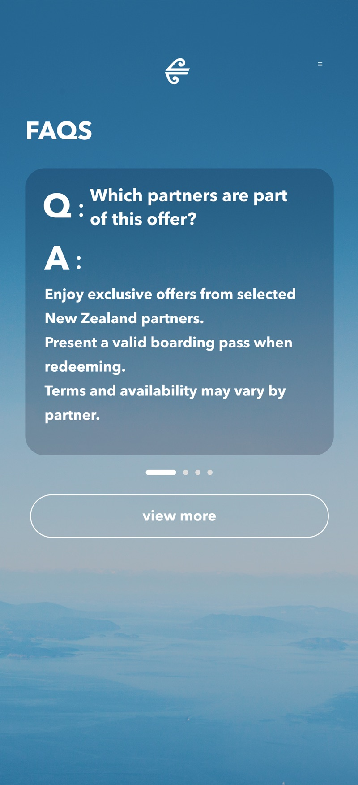

Air New Zealand boarding pass privileges media design
This project transforms the digital boarding pass into an integrated portal for travel services and city perks, ensuring Air New Zealand brand value is felt at every stage of the journey.
My role
UI/UX Designer
Overview
The "Air New Zealand Boarding Pass Privilege" website is a dedicated promotional platform designed to enhance the value of booking direct flights with Air New Zealand.
The primary objective of the project is to create an engaging showcase of exclusive partner privileges, ranging from local attractions and dining to accommodation and transport, available to eligible Air New Zealand passengers.
It serves as a bridge between the airline's premium in-flight experience and the destination experience in New Zealand.
Project Challenges
(1) Dual Conversion Focus
Balancing the page layout to effectively drive both direct flight bookings and third-party privilege redemptions without confusing the user's primary journey.
(2) Eligibility Communication
Translating strict campaign rules into concise, scannable UX elements to avoid customer frustration.
(3) Legacy Tech Limitations
Designing a seamless user flow while being constrained by an inability to integrate directly with partner booking.
Key insights
(1) Value Proposition
High-value destination perks act as the primary hook, effectively driving user engagement over standard flight ads.
(2) Redemption Friction
The disconnect between digital promo codes and mandatory physical boarding pass requirements risks user drop-off.
(3) Strategic Cross-Selling
Pairing attractive local partner discounts directly with flight booking CTAs successfully stimulates impulse ticket purchases.
(4) Expectation Management
Upfront transparency regarding strict eligibility rules prevents user frustration and reduces post-booking customer service issues.
User Persona


Design Process
I translate insights into design requirements.
- Hightlight Value - Visual Prominence
- Bridge Friction - Clear Instructions
- Cross_Selling - Strategic CTAs
- Expectation Management - Upfront Transparency
Site Map

Lo-Fi Interfaces


Final Showcase
Designed around the concept of 'accessible privileges,' the mobile interface uses immersive, full-screen visuals to engage users with destination content during brief travel breaks.





Transform traditional "one-time use" boarding passes into a sustainable digital service portal, enabling them to play a practical role before boarding, during waiting, and after arrival.
Reflections
Touch point
The boarding pass becomes more than a travel document. It connects passengers with local perks while creating new value for Air New Zealand and its partners.
Way Forward
If developed further, I would validate the concept through usability testing and business metrics such as perk activation rate, click-through rate, partner conversion, and repeat engagement.
I would also explore personalised recommendations based on destination and travel context, turning the platform into a scalable ecosystem connecting Air New Zealand, passengers, and commercial partners.
End
Air New Zealand boarding pass privileges media design